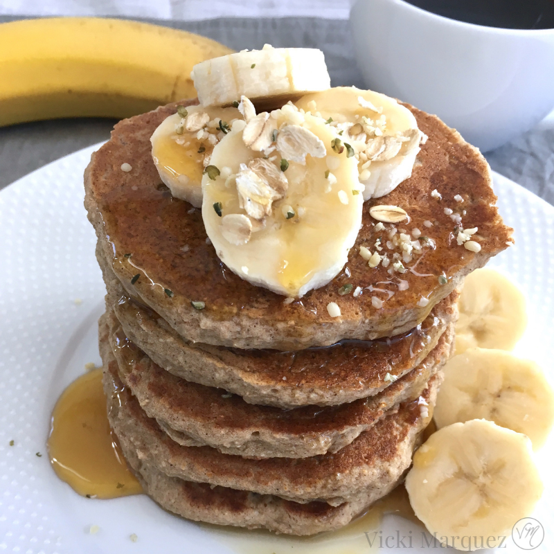

Banana Bread Pancakes

Description :
Ingredients :
- 1 ¼ cups all-purpose flour
- ½ teaspoon kosher salt
- ½ teaspoon baking powder
- ¼ teaspoon baking soda
- 1 large ripe banana
- 1 large egg
- ⅓ cup white sugar
- ¼ cup milk
- ¼ teaspoon vanilla extract
- ¼ cup unsalted butter, melted
- ½ cup finely chopped walnuts
- 1 tablespoon unsalted butter, or as needed
Steps :
- Combine flour, salt, baking powder, and baking soda in a small bowl with a whisk. Reserve until needed.
- Place banana in a mixing bowl and mash into a smooth paste with a potato masher. Add egg and sugar and whisk thoroughly until sugar is dissolved and mixture is smooth and creamy, about 2 minutes. Add milk, vanilla extract, 1/4 cup melted butter, walnuts, and flour mixture. Whisk until just combined.
- Let batter rest for 10 minutes.
- Melt 1 tablespoon butter in a large, nonstick pan or skillet over medium-high heat. Once the pan is hot, transfer in about 1/3 cup of the batter per pancake. Reduce heat to medium and cook until edges start to look dry and small air bubbles pop up through the surface, about 3 minutes. Flip and cook until golden brown, about 3 minutes more. Serve immediately.